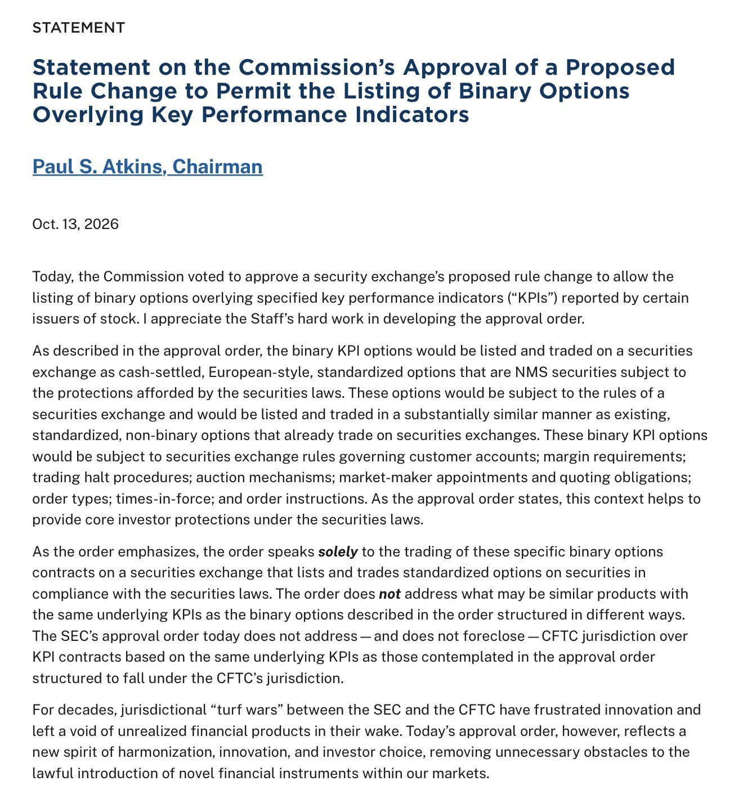
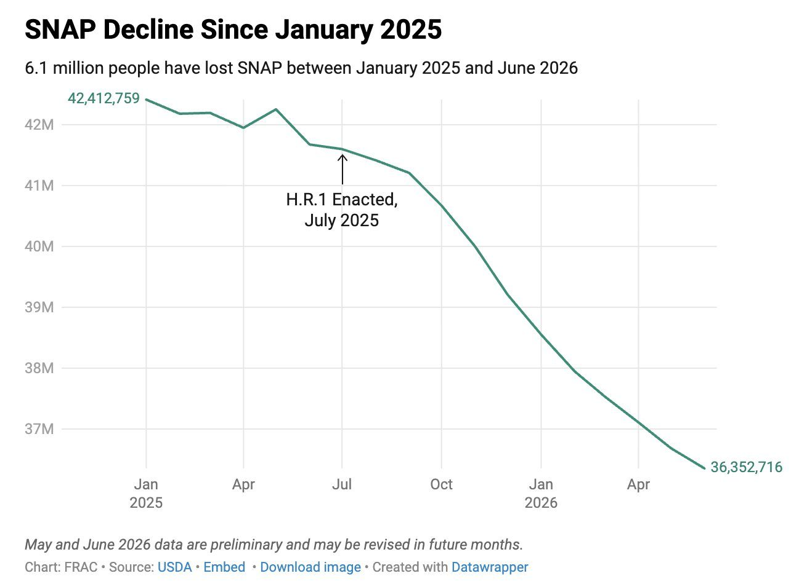
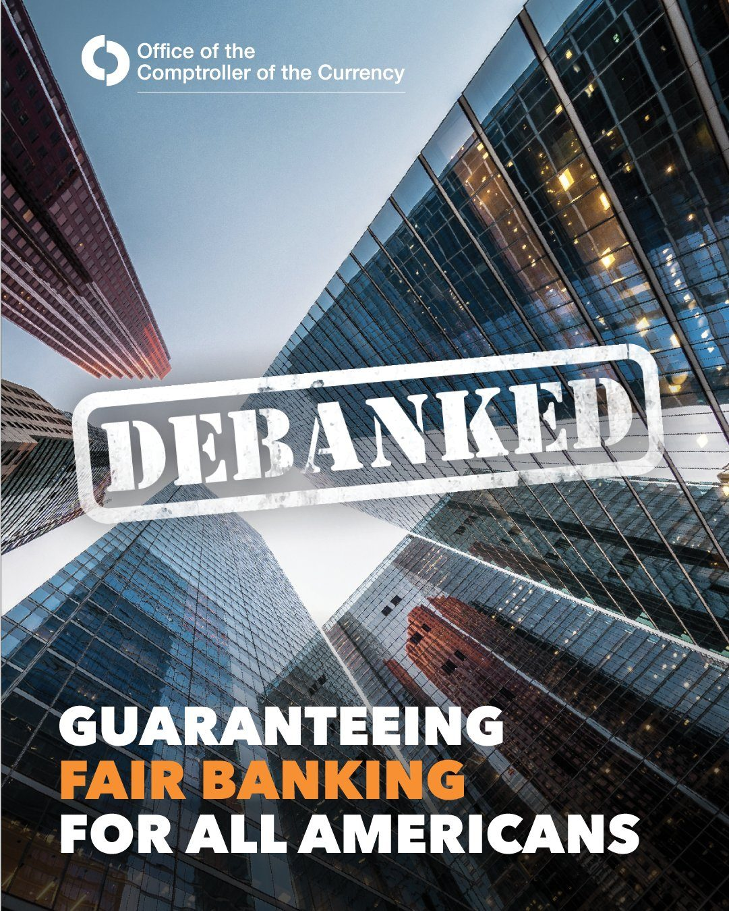
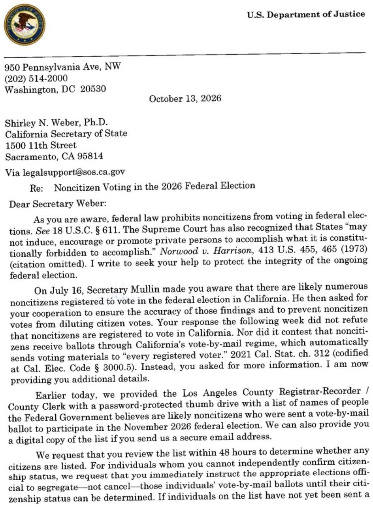
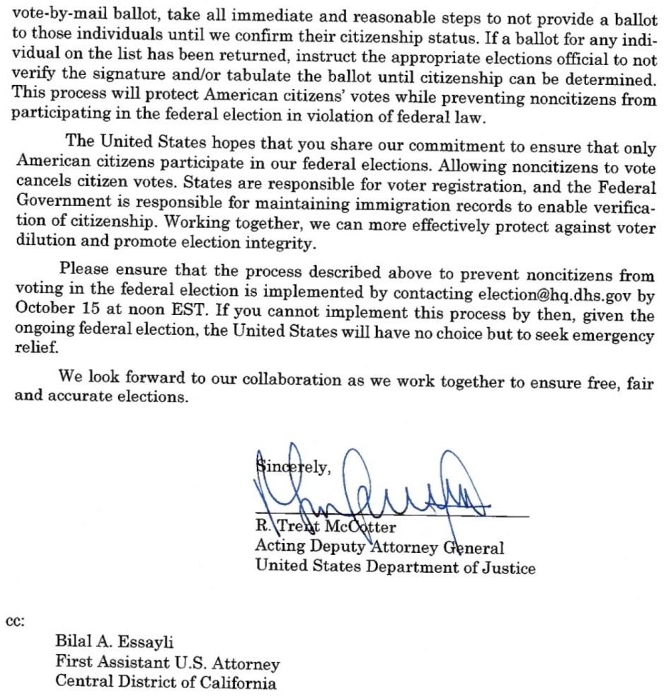
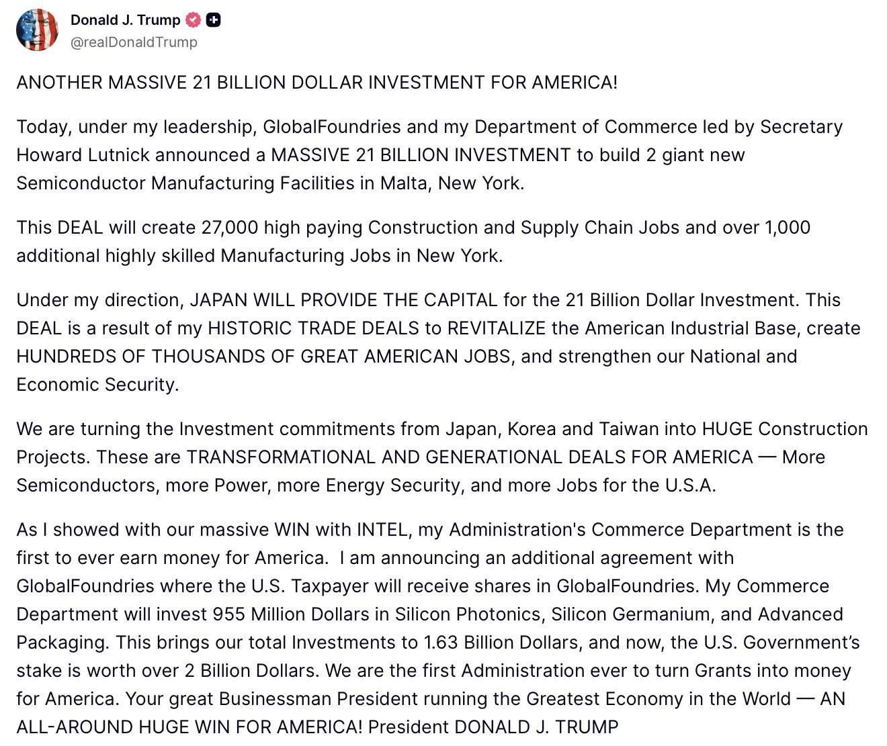
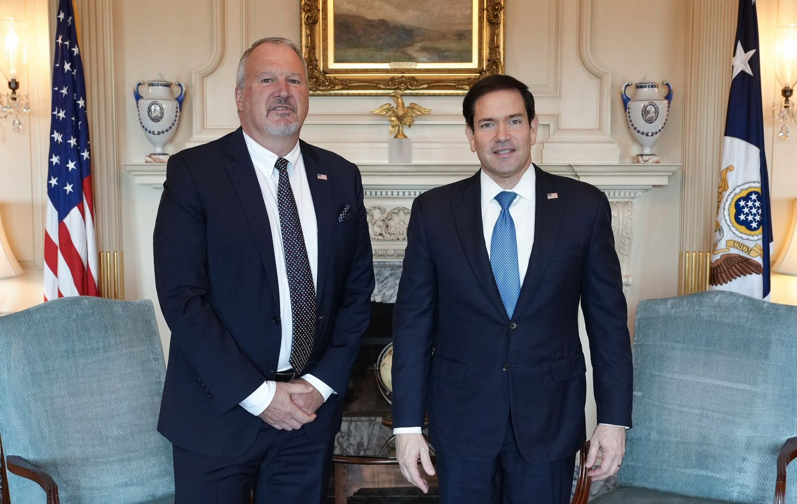
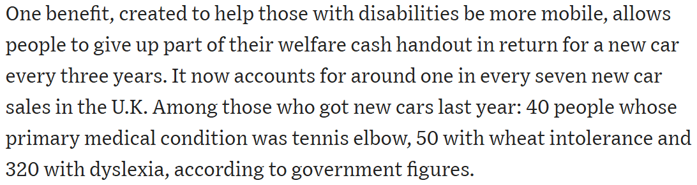

BREAKING: The US deficit widened to $1.99 trillion for FY2026, up +12% from the $1.78 trillion recorded last year. Spending rose by +6%, to $7.4 trillion, and NET interest officially rose above $1 trillion. Debt servicing costs are now their third largest expense for the US government, only behind Social Security and Medicare. This marks the fourth-straight year with the US fiscal deficit around $2 trillion. The deficit spending crisis is out of control.
Serving in this administration has been the privilege of a lifetime.
From helping to stand up the most successful presidential transition in history alongside @howardlutnick and @EDSecMcMahon, to rebuilding our defense industrial base as PTDO Deputy Under Secretary for R&E and then Acting Director of OSC at @DeptofWar, to driving forward President Trump’s vision to make the United States the “crypto capital of the world” as Executive Director of the @WhiteHouse Crypto Council, I consider myself to have been the luckiest guy in the world over these past two years.
First and foremost, I want to thank @POTUS for the opportunity to serve the American people again in your second term. Your clear-eyed vision to ensure the United States remains the undisputed global superpower at this time of unprecedented technological change and geopolitical strife is critical to our nation’s future prosperity.
Second, I want to thank @DavidSacks for your visionary leadership and mentorship. I am so grateful to have been able to work with you and learn from you over the past year. Thank you also to @USWREMichael, James Mazol, @HarryYJung, Nick Elliot, Tyler Williams, @lukejpettit, Jonathan Hurowitz, Andrew Rittenhouse, Michael Friedman, @atitus7, @passalacqua_mj, @willscharf, @JamesCBraid, @MayMailman, Steve Levine, Patrick Butler, Zach Carstens, and countless others across the administration for being the best colleagues anyone could ask for. It was an honor to serve alongside you.
Lastly, thank you to @SECPaulSAtkins and @ChairmanSelig, @SecScottBessent, @USComptroller Gould, @SenatorTimScott, @SenLummis, @SenatorHagerty, @berniemoreno, @JohnBoozman, @SenThomTillis, @RepFrenchHill, and @RepBryanSteil for your partnership in advancing crypto policy over the past year with the passage of the GENIUS Act and our work to advance the CLARITY Act. With regulators and elected officials like you, I rest easy knowing the future of digital asset innovation in America is bright.
Regarding next steps, I’ll have to more to share soon. For now, I’ll say this: I am extremely bullish on America as we embark upon a new golden age of technological advancement across multiple frontiers. I’m grateful to have done my part to unleash American innovation while in government, and I look forward to advancing that same mission in the private sector! 🇺🇸
Over the last decade, global investor demand for U.S. equities has increased and investors have increasingly shown that they want access to U.S. markets during their local trading hours. Nasdaq is preparing to meet this demand by moving its flagship market, the Nasdaq Stock Market, to be open for trading 23 hours a day, 5 days a week.
Recently, leaders from our North American Markets team explored how exchange infrastructure, market safeguards, and regulatory oversight will support expanded global access, and how trading institutions can prepare for launch. Watch the video:
RLUSD payments are becoming part of the banking infrastructure fintechs already use.
We’re partnering with @CrossRiverBank to integrate RLUSD on the XRP Ledger into its core banking platform, providing 24/7 settlement within payment networks and greater flexibility to settle intraday.
Learn more: https://www.crossriver.com/newsroom/cross-river-embeds-ripple-usd-stablecoin-on-the-xrp-ledger-into-its-core-banking-infrastructure-expanding-faster-payment-capabilities-for-businesses
Today, we're launching Mastercard Global Money Platform with @BVNKFinance, enabling banks, fintechs, and enterprises to offer stablecoin payments, local bank payouts, spend stablecoin-linked cards, and multi-currency accounts through a single integration. Learn more: https://www.mastercard.com/us/en/news-and-trends/press/2026/october/mastercard-and-bvnk-launch-global-money-platform-to-power-a-mult.html
▶ Watch on XA new BIS Paper traces how money works: from a single payment, a hierarchy of promises are held together by par, elastic credit is disciplined by funding, and public backstops make trust at scale possible. It holds lessons for new forms of money. https://www.bis.org/publications/paper-175-money-and-architecture-trust
🚨NEWS: @USComptroller Jonathan Gould says the @USOCC’s final rule implementing the GENIUS Act is expected “in the very near term,” before the end of October.
He made the remarks at the Milken Institute’s “Building the New Digital Economy” event, held alongside DC Fintech Week.
Global investing is evolving. The infrastructure behind it should too.
We're partnering with @DriveWealth across RLUSD settlement on the XRP Ledger, cross-border payments, custody and prime brokerage to modernize how money moves across global markets.
Together, we're building a more connected, efficient and always-on global investing ecosystem. 💪🏼
JUST IN: Charles Schwab fully launches Bitcoin and Ethereum trading
We discovered a sophisticated recording device that was hidden inside one of our offices. We used our models to understand the device and where it had come from, identifying that a specific employee had planted it a few days earlier. We referred the matter to the FBI, and we’re grateful to the agents and prosecutors who moved quickly to make an arrest. The FBI’s investigation is ongoing and we will continue to support their work.
At this time, we have no indications of this individual inappropriately accessing or exfiltrating model weights, source code, or customer data. The employee was terminated.
We take protecting our technology, data, and people seriously, and as a matter of national importance. Our security program is designed to protect against a wide range of threat actors, from insider risks to cybercriminals to nation states, and this case is an example of how AI can help address these sophisticated security threats.
SpaceX has used thrusters to position spacecraft for decades.
Making them work in a vehicle instead of a vacuum took all-new hardware & controls.
Every usable void in the car is packed with Carbon Fiber Overwrapped Pressure Vessels (COPVs)
More compressed gas on board = more flight time
🚨 #BREAKING: Tesla Roadster goes 0-60 in 0.81 seconds.
Elon just created a flying car.
It happened.
SITUATION DETECTED: Anthropic’s Head of Global Affairs Michael Sellitto has told the IMF that Anthropic projects Claude could lead 80-90% of frontier model training by next year, up from 3% in April.
JUST IN: G7 nations agree to launch simulated AI-powered cyberattacks on financial systems to test their defenses.
JUST IN: Google $GOOGL announces major advancement in quantum computing.
🚨NEW: The SEC has approved @Cboe to list binary options tied to KPIs (key performance indicators) reported by public companies, including @coinbase, @RobinhoodApp and @MARA.
The contracts let traders take yes/no positions on metrics like Coinbase trading volume, Marathon’s BTC production and Robinhood’s customer and revenue numbers.
Robinhood is expected to be the first retail broker to offer them.
For crypto, this creates a new way to trade crypto-linked company performance beyond betting directly on $BTC’s price. The SEC approved this specific securities-options structure, while leaving room for differently structured contracts to fall under CFTC jurisdiction.
@SECPaulSAtkins called it “a new spirit of harmonization, innovation, and investor choice.”

Powerful paragraph from U.S. Secretary of the Treasury Scott Bessent’s statement for the World Bank Development Committee and IMF International Monetary and Financial Committee:
“One area where this refocus must go further is in the IMF’s work on global imbalances. This especially includes strengthening its analysis and engagement on the role non-market policies and practices and exchange rates play in driving external imbalances. Policymakers around the world are having difficult discussions about how to sustain market-based systems amid distortionary policies from some economies that skew competition and hurt employment. The IMF was founded to prevent these kinds of distortive policies and negative spillovers, and must exercise its voice on this critical issue or risk being sidelined.”
SNAP usage is at its lowest level since 2009 and has fallen by nearly 7 million since Donald Trump took office.

@SPCX100T @RonBaronAnalyst Unless there is a major world war, SpaceX probably gets to >$100T in <10 years
BREAKING: Gasoline-only cars fall below 50% of global new vehicle sales for the first time in history.
New poll on Ukrainian attitudes on the war finds a strong majority – 57% – support an immediate negotiated peace with Russia and territorial concessions
Only 21% support fighting until the Donbass is returned to Ukrainian control
Most overwhelmingly favor a national referendum on peace, rather than allowing the president or parliament to decide
The survey was taken by Rating Group on October 3-5
It follows a Gallup poll this June showing 66% of Ukrainians favoring an immediate negotiated cessation of hostilities
.@POTUS: "Zelensky is not a good guy for us to deal with... If they're going to end up with a settlement of some kind, they're not going to do it with him. He doesn't want to settle. He says he wants to settle, but he doesn't."
▶ Watch on X.@POTUS: "The Biden Administration was very corrupt... It was a very corrupt, weaponized Administration — and yes, they did a lot of bad things having to do with Ukraine."
▶ Watch on XBREAKING: Trump is "furious" with Zelenskyy and may order a full ban on intelligence sharing with Ukraine to stop its long-range strikes on Russia, with the idea actively being discussed inside the White House, per a US official to Semafor.
"Trump is pretty pissed off," the official said.
BREAKING: US intelligence officials warn the Ukrainian embassy in Washington that any further strikes on Russian energy sites will now mean a halt to all intelligence sharing, per WaPo.
"The warnings were so widespread that anyone with a Ukrainian-sounding last name got a call."
JUST IN: 🇺🇦🇷🇺 Ukrainian President Zelensky says Ukraine will resume strikes on Russian oil refineries, FT reports.
Democrats howled when we terminated 760,000 phantom enrollments from Obamacare.
They claimed we were taking care away from real people. Well, fewer than 1 in 10,000 of those canceled enrollments has led to a phone call or outreach from a real person.
What @DrOzCMS and the team are doing to crackdown on fraud is remarkable.
Hardworking American taxpayers should not be forced to subsidize health care for people who are ineligible under federal law.
Today’s proposed rules implement the common-sense reforms enacted by the Working Families Tax Cuts to close eligibility loopholes and ensure taxpayer-funded Premium Tax Credits are reserved for eligible Americans.
Under @POTUS, this Administration is cracking down on fraud and corruption; holding bad actors accountable; lowering health care costs for Americans; and restoring integrity to our tax code and health care system.
Sign the pledge below and join us in the War Against Fraud.
HUD, under @SecretaryTurner’s leadership, is holding fraudsters accountable.
We will serve law-abiding, vulnerable Americans -- not criminals, fraudsters, cheats, or illegal aliens.
Thank you @VP and @WHFraudTF!
Under Biden, CMS had stopped checking for duplicate Medicaid and Obamacare enrollment.
Under President Trump we're SHUTTING DOWN the fradusters.
JUST IN: RFK Jr. announces the elimination of 189,000 improper Obamacare subsidies, including payments linked to 11,000 deceased enrollees.
The OCC’s supervisory review of debanking activities at the nine largest national banks it supervises found that these banks had policies that required, encouraged, or otherwise influenced banks to deny or limit access to financial services to Americans because of their political or religious beliefs or affiliations or their lawful business activities. Read about the OCC’s findings and its efforts to guarantee fair banking for all Americans.

Thanks to @POTUS’ leadership, we are delivering on his commitment to guarantee Fair Banking for all Americans.
Our review @USOCC documents how banks’ use of subjective “reputation risk” policies restricted access to financial services based on customers’ beliefs and lawful business activities. Victims spanned across the political spectrum, ranging from small businesses that sold merchandise supporting the President to companies that donated predominantly to Democrats. Under this @USTreasury Department, that won’t happen again.
We will continue working to ensure Americans have fair access to our banking system, regardless of their political or religious views.
Read the full report:
JPMorgan, Wells Fargo, PNC, and TD Bank used the SPLC’s “hate group” labels against conservative and Christian groups.
We’ve been investigating politically motivated debanking since January 2025.
Chairman @RepJamesComer: “We are not slowing down.”
Democrats’ margin among Jewish voters in New York’s 2026 congressional ballot declines by 36 points, per CNN.
Time is up for California
We gave California 48 hours to review and flag more than 20,000 noncitizen voters recently mailed live ballots.
California refused.
This morning we filed a federal court action seeking an emergency order requiring California to sequester ballots returned by suspected noncitizens.
This is not political or controversial. 18 U.S.C. § 611 makes it a federal offense for noncitizens to vote in a federal election. We will not allow California to dilute the votes of American citizens.


We have undercover people in the inside midterm campaigns across the United States.
We are not releasing the footage yet because we are checking facts, corroborating sources, and obtaining comment to make our stories absolutely bulletproof.
I will also be showing up in person over the weekend to confront the people who say they are breaking the law.
We are announcing this because I want you to know I’m watching every single thing you ALL are doing.
STAY TUNED…
BREAKING: Trump administration threatens legal action against California unless it reviews a list of suspected noncitizen voters within 48 hours. — Reuters
MINNESOTA: @HSI_HQ arrested Mukeshkumar Somabhai Chaudhari, a non-citizen, for illegally voting in the 2024 election.
#BREAKING: 1,827 noncitizens removed from Florida's voter rolls cast 7,035 ballots.
HSI Arrests Alien Charged with Illegally Voting in Pennsylvania
AMERICAN ENERGY DOMINANCE.
President Trump did what other Presidents couldn't: secured the crucial 800-mile Alaska LNG pipeline, the largest energy infrastructure project in the history of Alaska. 🇺🇸
🇺🇸 As a direct result of President Trump’s U.S.-Japan trade deal, Japan will provide up to $21 BILLION to build two new semiconductor factories in upstate New York.
🏭 GlobalFoundries will operate the two factories, which will create tens of thousands of high-paying American jobs across manufacturing, construction, and the broader semiconductor industry.
Commerce is also redirecting up to $955 million in existing CHIPS funding to bring critical chip production back to America and reduce our reliance on foreign manufacturers.
This is President Trump’s trade agenda in action.

Trump Administration Brings in $280B in SelectUSA Investment – More Than All Previous Program Years Combined
Taiwan to build a $4B AI manufacturing complex in Texas to support major chipmakers.
Productive meeting with Managua Chargé d'Affaires Elias Baumann to determine next steps on the Murillo-Ortega dictatorship's rejection of U.S. Ambassador-designate Natasha Franceschi.
We agreed that hostile political theater aimed at undermining U.S. representation is adversarial and another example of the dictators prioritizing themselves over the real needs of the Nicaraguan people.

JUST IN: Fund managers in Taiwan are reportedly quitting their jobs to trade their own money as the country's stock market experiences an unprecedented rally.
JUST IN: Trump reveals ongoing discussions with Russia and China aimed at denuclearization, saying he would “love to denuclearize if possible.”
This @WSJ piece on the UK's runaway disability benefits is something else. Great color from @MaximColch & @davidluhnow

🚨NEW: Four in five new jobs created in Britain since 2014 were taken by migrants
[@Telegraph]
Another MAHA win! @FDA has cleared the first new sunscreen ingredient in decades: bemotrizinol, used safely in Europe, Australia, and parts of Asia for more than 20 years.
Now Americans have access to another option for protecting their skin. We are expanding choice and bringing proven innovations to the American people.
Today, as part of Operation Economic Outcast, Treasury disrupted Iran’s efforts to infiltrate the international financial system through an Iraqi bank that also supports Iran’s terrorist proxy militia groups. By dismantling these institutions—including offshore banks and shadow financiers that have moved hundreds of millions of dollars through shell companies and foreign‑exchange specialists across the Middle East and Asia—Treasury is severing critical revenue streams that sustain Iran’s military and proxy forces.
Oil flow through Strait of Hormuz hits 12M barrels a day — defying increasing attacks from Iran
For too long, Communist Cuba has been allowed to operate as an outpost for malign actors and terror groups – including the Islamic Republic of Iran, the world’s number one state sponsor of terrorism – to target the United States.
Today, I designated BICSA, a Cuban financial institution which has been providing financial services to sanctioned Iranian entities.
Let me be absolutely clear: the Trump Administration will not tolerate a rogue state hosting hostile foreign military, intelligence and terror operations less than a hundred miles from our homeland.
JUST IN: 🇨🇦 Canadian Prime Minister Carney says he plans to increase immigration into Canada.
NON-CITIZENS WIRED $56 BILLION BACK HOME LAST YEAR ALONE.
THAT'S AFTER THEIR KIDS GOT FREE SCHOOL, FREE LUNCHES, AND FREE MEDICAL CARE PAID FOR BY YOU!
Birthright citizenship for immigrants’ children is costing American taxpayers $150.7 billion every year, per JTN.
#BREAKING: Trump admin cuts refugees’ window to fight losing their status from 30 days to 10.
DHS to Boost U.S. Graduates by Ending Rubber-Stamp Visa Extensions
DEVELOPING: Judicial Watch is seeking canine euthanasia records during Dem Senate nod Abdul El-Sayed's tenure as Detroit health director when 1000s of dogs were put to sleep @ his agency, which was described as a "dog slaughterhouse." In Islam, pet dogs are viewed as dirty/haram (forbidden) to touch
Trump administration is seeking to revoke Rep. Ilhan Omar’s (D-MN) U.S. citizenship and ultimately deport her. — WSJ
BREAKING: Federal authorities have reportedly seized Rep. Ilhan Omar's phone.
New York’s upstate counties must find new revenue sources as longtime residents adjust to rising property values from an influx of wealthy New York City residents.
BREAKING: Trump administration arrests 1,296 Tren de Aragua gang members across the U.S. in the "largest crackdown on transnational crime in American history."